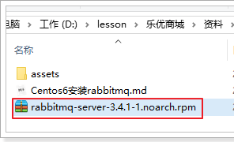
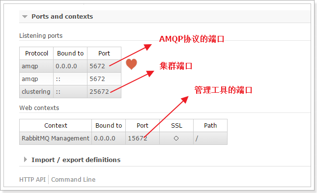

0.安装文件准备
看linux虚拟机是64位还是32位
然后去这个网站下载Erlang安装包：https://packages.erlang-solutions.com/rpm/centos/6/

首先将课前资料提供的安装包上传到 /home/leyou/MQ目录：

这个是RabbitMQ的安装包：
通过filezilla将文件上传到虚拟机中

1.安装Erlang
我们并没有提供Erlang安装包，直接采用yum仓库安装：
1 | yum install esl-erlang-18.3.4.5-1_centos632.i686.rpm |
2.安装RabbitMQ
2.1.安装
进入文件所在目录:
1 | cd /home/leyou/MQ |
然后输入命令：
1 | rpm -ivh rabbitmq-server-3.4.1-1.noarch.rpm |
2.2.修改配置文件
将配置文件模板复制到etc目录：
1 | cp /usr/share/doc/rabbitmq-server-3.4.1/rabbitmq.config.example /etc/rabbitmq/rabbitmq.config |
通过vim命令编辑：
1 | vim /etc/rabbitmq/rabbitmq.config |
修改下面内容：

注意要去掉后面的逗号
2.3.设置开机启动
输入下面命令
1 | chkconfig rabbitmq-server on |
2.4.启动命令
通过下面命令来控制RabbitMQ：
1 | service rabbitmq-server start |
2.5.开启web管理界面
RabbitMQ提供了用来管理的控制界面，十分方便，不过默认是关闭的。
我们通过命令开启web管理插件：
1 | rabbitmq-plugins enable rabbitmq_management |
然后重启RabbitMQ：
1 | service rabbitmq-server restart |
2.6.开放端口
RabbitMQ默认使用15672端口进行web访问，我们开启防火墙端口：
1 | /sbin/iptables -I INPUT -p tcp --dport 15672 -j ACCEPT |
然后在主机中通过地址：http://192.168.25.128:15672即可访问到管理界面
3.管理界面介绍
第一次访问需要登录，默认的账号密码为：guest/guest
3.1.主页

- connections：无论生产者还是消费者，都需要与RabbitMQ建立连接后才可以完成消息的生产和消费，在这里可以查看连接情况
- channels：通道，建立连接后，会形成通道，消息的投递获取依赖通道。
- Exchanges：交换机，用来实现消息的路由
- Queues：队列，即消息队列，消息存放在队列中，等待消费，消费后被移除队列。
端口：

3.2.添加用户

上面的Tags选项，其实是指定用户的角色，可选的有以下几个：
超级管理员(administrator)
可登陆管理控制台，可查看所有的信息，并且可以对用户，策略(policy)进行操作。
监控者(monitoring)
可登陆管理控制台，同时可以查看rabbitmq节点的相关信息(进程数，内存使用情况，磁盘使用情况等)
策略制定者(policymaker)
可登陆管理控制台, 同时可以对policy进行管理。但无法查看节点的相关信息(上图红框标识的部分)。
普通管理者(management)
仅可登陆管理控制台，无法看到节点信息，也无法对策略进行管理。
其他
无法登陆管理控制台，通常就是普通的生产者和消费者。
3.3.创建虚拟主机（Virtual Hosts）
为了让各个用户可以互不干扰的工作，RabbitMQ添加了虚拟主机（Virtual Hosts）的概念。其实就是一个独立的访问路径，不同用户使用不同路径，各自有自己的队列、交换机，互相不会影响。

创建好虚拟主机，我们还要给用户添加访问权限：
点击添加好的虚拟主机：

进入虚拟主机设置界面：

自己创建一个账号
遇到问题
[root@promote ~]# cat /var/log/rabbitmq/startup_log
ERROR: epmd error for host promote: address (cannot connect to host/port)
查看主机名
1 | [root@promote ~]# hostname |
查看network
1 | [root@promote ~]# cat /etc/sysconfig/network |
查看hosts
1 | [root@promote ~]# cat /etc/hosts |